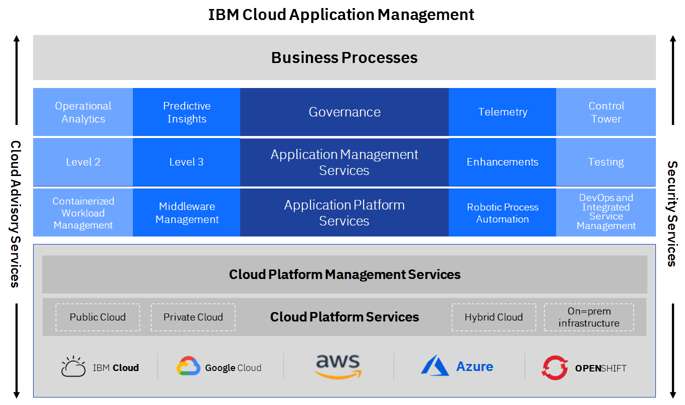
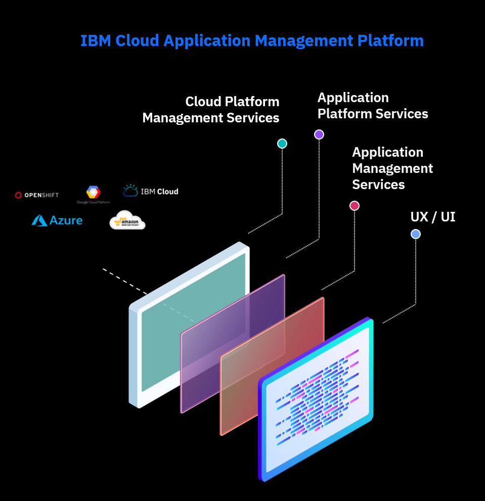
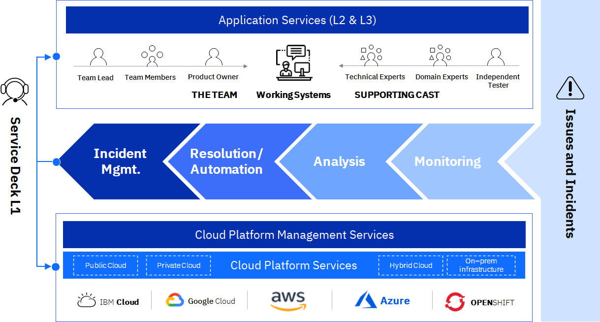
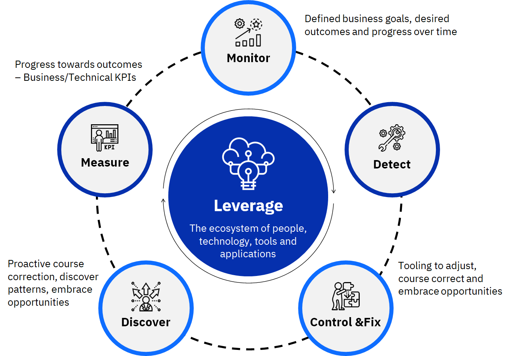
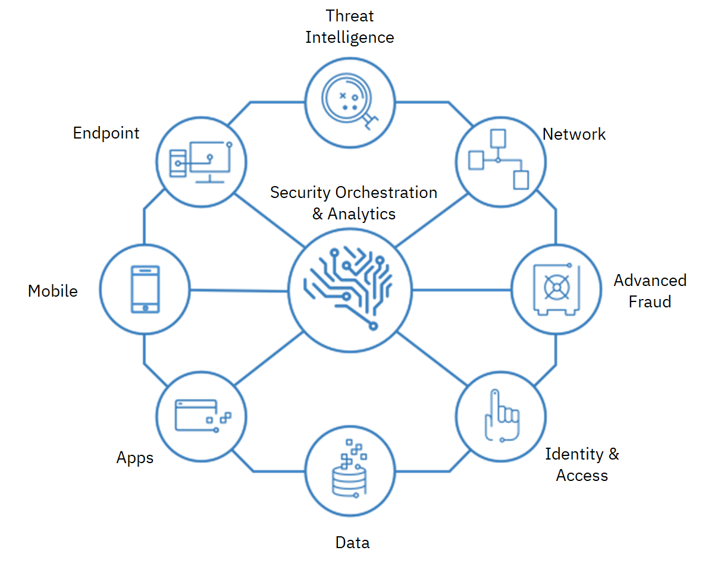

Monitoring
Table of Contents
Overview
Having an integrated multicloud services management delivers:
- Ultimate flexibility, freedom of choice and avoidance of vendor lock-in
- Simplified and delayered cloud and application management functions
- Consistency in monitoring, optimized data/workload placement, improved service management quality
- Reduced risk, enhanced resiliency, and improved reliability in your entire cloud operations
- Increased transparency, faster innovation and reduced cost through simplified governance
| Integrated Service Management |
|---|
|  |
Cloud Management
Manage traditional and cloud environments seamlessly across hybrid multicloud using our enterprise grade cloud management platform.
IBM delivers the only enterprise grade solution for managing hybrid multicloud which provides:
- A unified operations layer that enables infrastructure and applications to be monitored and maintained including legacy infrastructure, private cloud, public cloud and container environments
- A robust management platform with built in capabilities including inventory, orchestration, operations, and service management across cloud infrastructures.
- An optimized digital self-service user experience to consume, deploy, operate, and govern across all clouds and data centers through a single pane of glass
| Cloud Management |
|---|
|  |
Security Operations Center (SOC)
The SOC proactively monitors, avoids outages, quickly troubleshoots and continuously improves through:
- Single point of contact & pane of glass view into Hybrid multicloud provider landscape which delivers application run/operate/service delivery with cost savings of up to 20%
- Integrated business services operations and management using proven SRE practices and AI-infused automation
- Embedded Hybrid IT Security assures data protection, resiliency, and compliance
| Security Operations Center (SOC) |
|---|
|  |
Services Control Tower
Services Control Tower enables you to manage the Cloud Operating Model with meaningful insights to redefine business strategies. The IBM Services Control Tower summarizes key metrics and allows you to manage and simplify digital, cognitive and cloud chaos, translating cloud complexity into tangible enterprise business strategies. It provides:
- End-to-end visibility to manage operations
- Produce early warnings for issues with automatic resolutions driving quicker response times
- Reduce overall operating costs but increase business flexibility
- Achieve the promise of the cloud operating benefits
| Services Control Tower |
|---|
|  |
Integrated DevOps
Adopt an integrated DevOps platform for hybrid multicloud – offered as a shared, dedicated or customized model.
Embrace DevOps across the enterprise with new ways of operating and the tools required to accelerate software delivery, improve quality and enhance customer experience
- The IBM DevOps Commander enables tool chain orchestration with customized, real time builds of your DevOps environment, almost 70% faster than traditional methods.
- Standardized, integrated DevOps tool chain services available across leading cloud platforms
- Build a customized DevOps tool chain and integrate already deployed DevOps tools in less than an hour
- Incorporates market leading and open source software engineering tools
- Best in class security practices integrated into the software engineering lifecycle
- Secure testing integration creates a robust DevSecOps environment
Security Cloud Framework
Traditional security controls and infrastructure operational practices are changing to data and workload-centric cloud security policies, technologies, and practices. We approach this challenge by aligning security controls with the realities of your hybrid multicloud IT estate to:
- Enforce Application security via DevSecOps practices
- Cloud Platform security
- Identification and planning for enterprise / regulatory specific controls / compliance / audits
- Data and Storage security and privacy
- Security threat monitoring
- Security incident management
- Business risk and compliance services
| Security Framework |
|---|
|  |